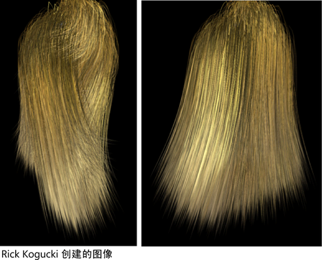

可以直接用“Maya 软件”(Maya Software)渲染器来渲染使用 Paint Effects 创建的 nHair。如果将“Paint Effects”转化为多边形，则可以在“Maya 硬件”(Maya Hardware)渲染器、Arnold for Maya 或首选第三方渲染器中渲染 nHair。（请参见 Paint Effects 中的将 Paint Effects 转化为几何体。）或者，可以只将曲线输出到另一个渲染器中，如 RenderMan。
提示： 使用“Paint Effects”中的“多条纹”(Multi Streaks)可以方便地渲染更多的头发。 这些属性在 hairSystemShape 节点“属性编辑器”(Attribute Editor)的“多条纹”(Multi Streaks)区域中。
可以渲染单帧，或通过执行批渲染来渲染动画。有关信息，请参见以下内容：
渲染单帧 nHair 模拟
- 在渲染之前，确保显示头发系统的“当前位置”(Current Position)（），然后转到要渲染的帧。
- 单击“状态行”(Status Line)中的“渲染设置”(Render Settings)
按钮，并执行以下操作：
- 从“使用以下渲染器渲染”(Render Using)下拉列表中选择一个渲染器。
- 如果要使用“Maya 软件”(Maya Software)渲染器渲染“Paint Effects”，则启用“Maya 软件”(Maya Software)选项卡中“Paint Effects 渲染选项”(Paint Effects Rendering Options)区域中的“过采样”(Oversample)和“过采样后置过滤器”(Oversample post filter)选项。这可以使头发看起来更逼真。
- 单击“状态行”(Status Line)中的“渲染”(Render)按钮。这将渲染“渲染视图”(Render View)窗口中的当前帧。

渲染 nHair 模拟
- 在渲染之前，确保显示头发系统的“当前位置”(Current Position)（）。
- 单击“状态行”(Status Line)中的“渲染设置”(Render Settings)按钮。显示“渲染设置”(Render Settings)窗口。
- 从“使用以下渲染器渲染”(Render Using)下拉列表中选择一个渲染器。
- 在“公用”(Common)选项卡中，执行以下操作：
- 在“文件名前缀”(File Name Prefix)字段中，键入要用于渲染图像的前缀。
- 在“帧/动画扩展名”(Frame/Animation Ext)字段中，选择“名称.扩展名.#”(name.ext.#)。
- 在“开始帧”(Start Frame)和“结束帧”(End Frame)字段中，键入渲染序列中的第一帧和最后一帧。
- 可选择转到渲染器特定的选项卡，并在“运动模糊”(Motion Blur)区域中启用“运动模糊”(Motion Blur)。
- 如果要使用“Maya 软件”(Maya Software)渲染器渲染“Paint Effects”，则启用“Maya 软件”(Maya Software)选项卡中“Paint Effects 渲染选项”(Paint Effects Rendering Options)区域中的“过采样”(Oversample)和“过采样后置过滤器”(Oversample post filter)选项。这可以使头发看起来更逼真。
- 执行下列操作之一：
- 选择。
- 选择
 。将出现“批渲染帧”(Batch Render Frame)窗口。如果需要，请更改选项，然后单击“批渲染”(Batch Render)。
。将出现“批渲染帧”(Batch Render Frame)窗口。如果需要，请更改选项，然后单击“批渲染”(Batch Render)。
若要查看经过渲染的动画，请启动 Fcheck，然后打开 rendered.iff 文件。有关查看动画的详细信息，请参见在 FCheck 中打开文件。重要： 自 Maya 2020 起，FCheck 在 macOS 上不再受支持。可以在应用程序首选项（“窗口 > 设置/首选项 > 首选项”(Windows > Settings/Preferences > Preferences)）中选择其他默认图像查看器。
使用分布式渲染进行渲染
如果要执行分布式渲染，或者由于任何原因要拆分渲染，则应创建头发 nCache。通过创建 nCache 可以进行分布式渲染，并使模拟精确匹配。
有关详细信息，请参见 nCaching 概述。